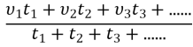
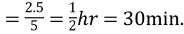

What is speed?
SOLUTION
Speed is defined as distance travelled per unit time, i.e.,
— Its S.I. unit is m/s (meter/sec)
— It is a scalar quantity i.e., we have to specify only magnitude and not direction
SUBJECTIVE QUESTION 2
What are types of speed?
SOLUTION
When a particle covers equal distances in equal intervals of time, (no matter how small the intervals are) then it is said to be moving with uniform speed. In given illustration motorcyclist travels equal distance (= 5m) in each second. So we can say that particle is moving with uniform speed of 5 m/s.
(b) Non-uniform (variable) speed :
In non-uniform speed particle covers unequal distances in equal intervals of time. In the given illustration motorcyclist travels 5m in 1st second, 8m in 2nd second, 10m in 3rd second, 4m in 4th second etc. Therefore its speed is different for every time interval of one second. This means particle is moving with variable speed.
(c) Average speed : The average speed of a particle for a given ‘Interval of time’ is defined as the ratio of distance travelled to the time taken.
Average speed ;
Time averaged speed : When particle moves with different uniform speed , , ... etc in different time intervals , ,  , ... etc respectively, its average speed over the total time of journey is given as
, ... etc respectively, its average speed over the total time of journey is given as
=
Special case : When particle moves with speed upto half time of its total motion and in rest time it is moving with speed then
Distance averaged speed : When a particle describes different distances .., , , ...... with different time intervals , ,  , ...... with speeds .. respectively then the speed of particle averaged over the total distance can be given as
, ...... with speeds .. respectively then the speed of particle averaged over the total distance can be given as

(d) Instantaneous speed : It is the speed of a particle at particular instant. When we say “speed”, it usually means instantaneous speed. A speedometer in a vehicle measures speed but not velocity.
PRACTICE QUESTION 1
A vehicle covers the first 100 m of his journey with a speed of 20 ms–1 and the next 200 m of his journey with a speed of 40 ms–1. Find
(a) Total duration of his travel (b) Average speed during the motion
SOLUTION
(a) Given
(b) Total distance =
Total time taken = 10 sec.
PRACTICE QUESTION 2
A man walks on a straight road from his home to a market 2.5 km away with a speed of 5 km/h. Finding the market closed, he instantly turns and walks back home with a speed of 7.5 km/h. Find the average speed of the man over the interval of time 0 to 40 min.
SOLUTION
Time taken in going to market 
As we are told to find average speed for the interval 40 min., so remaining time for consideration of motion is 10 min.
So distance travelled in remaining 10 min =
Hence, average speed = = .
PRACTICE QUESTION 3
If a car covers 2/5th of the total distance with v1 speed and 3/5th distance with v2 then what is the average speed?
SOLUTION
Average speed =
=
PRACTICE QUESTION 4
A vehicle traversed the first 30 km of its journey at a speed of 10 kmh–1, the second 15 km of journey and finally third 20 km at a speed of 10 kmh–1? What is the speed during the second portion of his journey if the average speed of the vehicle is kmh–1.
SOLUTION
Given
(where is the speed during the motion BC)
PRACTICE QUESTION 5
A body travelling along a straight line traversed one-third of the total distance with a velocity 4 m/s. The remaining part of the distance was covered with a velocity 2 m/s for half the time and with velocity 6 m/s for the other half of time. What is the average velocity over the whole motion?
SOLUTION
Let S be the total distance travelled by the body. It t1 is the time taken to cover first one-third distance,
then, t1 =
Let t2 be the time for each of the remaining two journeys.
then, = 2t2 + 6t2 = 8t2
t2 =
Average velocity = = = = 4 m/s
PRACTICE QUESTION 6
How to convert 5ms–1 into km h–1?
SOLUTION
We know, 1 km/hour = = m/s
Thus, or
5ms–1=5 × = 5 ×=
PRACTICE QUESTION 7
Convert 9 miles per hour (mi/h) into meter per second (m/s). Given that 1 mile = 1.6 km
SOLUTION
 =
=